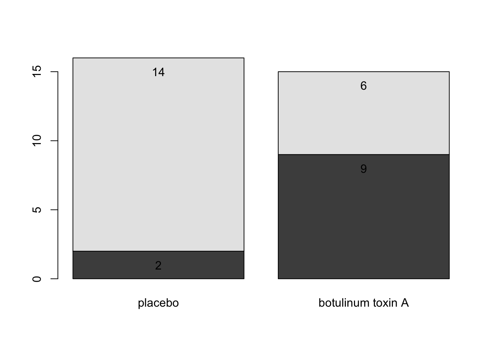

Chapter 4 Analysis of Categorical Data (section 6.3)
In either an observational study or a randomized experiment, we are often interested in assessing the statistical significance of the differences we see: Is the observed difference too big to have reasonably occurred just due to chance? To answer the question, we will use
- simulation
- mathematical probability models.
- Is this an experiment or an observational study?
- Explain the importance of using the “placebo” treatment of saline.
- Create the two-way table for summarizing the data, putting the explanatory variable as the columns and the response as rows.
- Calculate the conditional proportions of pain reduction in the two groups. Display the results as a segmented bar graph. Comment on the preliminary analysis.
| placebo | Botox | ||
|---|---|---|---|
| pain reduction | 2 | 9 | 11 |
| no pain reduction | 14 | 6 | 20 |
| 16 | 15 | 31 |
backpain <- matrix(c(2,14,9,6),ncol=2,byrow=F)
backpain## [,1] [,2]
## [1,] 2 9
## [2,] 14 6backpain.bp <- barplot(backpain, plot=FALSE)
barplot(backpain, names.arg=c("placebo","botulinum toxin A"))
text(backpain.bp, c(backpain[1,]-1,backpain[2,]+backpain[1,]-1),t(backpain))
If there was no association between the treatment and the back pain relief, about how many of the 11 ``successes" would you expect to see in each group? Did the researchers observe more successes in the saline group than expected (if the drug had no effect) or fewer successes than expected? Is this in the direction conjectured by the researchers?
Is is possible that the drug has absolutely no effect on back pain? That the differences were simply due to chance or random variability? How likely is that?
Simulation
- 11 red
success" cards (pain reduction); 20 blackfailure" cards (no pain reduction) - randomly deal out (i.e. shuffle) 15 cards to the treatment group and 16 cards to the placebo group.
count how many people in the treatment group were successes? Repeat 5 times.\
- process
- what do the cards represent?
- what does shuffling the cards represent?
- what implicit assumption about the two groups did the shuffling of cards represent?
- what observational units would be represented by the dots on the dotplot?
- why would we count the number of repetitions with 9 or more ``successes’’?
Repeat simulation using the two-way table applet: http://www.rossmanchance.com/applets/TwowaySim/TwowaySim.html
- summary
- How many reps?
- How many as extreme as the true data?
- What proportion are at least as extreme as the true data?
- Do our data support the researchers conjecture?
- What if the actual data had been 7 successes in the treatment group (and 4 in the placebo group)?
Notice that regardless of whether or not the drug has an effect, the data will be different each time (think: new 31 people). The small p-value allows us to draw cause-and-effect conclusions, but doesn’t necessarily allow us to infer to a larger population. Why not?
| low cutoff | p-value | high cutoff | evidence |
|---|---|---|---|
| p-value \(\leq\) | 0.001 | very strong evidence | |
| 0.001 | \(<\) p-value \(\leq\) | 0.01 | strong evidence |
| 0.01 | \(<\) p-value \(\leq\) | 0.05 | moderate evidence |
| 0.05 | \(<\) p-value \(\leq\) | 0.10 | weak but suggestive evidence |
| 0.10 | \(<\) p-value | little or no evidence |
Because we have a fixed sample, we can’t use the Binomial distribution to figure out associated probabilities. Instead, we use the hypergeometric distribution to enumerate the possible ways of choosing our data or more extreme given fixed row and column totals.
| placebo | Botox | ||
|---|---|---|---|
| pain reduction | 2 = x | 9 | 11 = n |
| no pain reduction | 14 | 6 | 20 |
| 16 = M | 15 = N - M | 31 = N |
To make it simpler, let’s say I have 5 items (N=5), and I want to choose 3 of them (n=3). How many ways can I do that?\
So, how many different ways can I select 11 people (out of 31) to be my ``pain reduction" group? That is the total number of different groups of size 11 from 31. But really, we want our groups to be of a certain breakdown. We need 2 (of 16) to have gotten the placebo and 9 (of 15) to have gotten the Botox treatment.
At your seats: find the P(X=2)\
We can now find EXACT probabilities associated with the following hypotheses. \[\begin{eqnarray*} &&H_0: p_{pl} = p_{Btx}\\ &&H_a: p_{pl} < p_{Btx}\\ &&p = \mbox{true probability of no pain}\\ \end{eqnarray*}\]Is this a one- or two-sided test? Why? [Note: the assumptions here are that the row and column totals are fixed – a {}. However, the research project in the back of chapter 6 extends the permutation test to demonstrated that the probabilities hold even under alternative technical conditions.\
Note also that we get an exact probability with no assumptions about sample size (we can use Fisher’s Exact Test even when true probabilities are close to 0 or 1.]
\starthere{2/1/17}
2x2… but also rxc (\(p_a = p_b = p_c\))
We can also use \(\chi^2\) tests to evaluate \(r \times c\) contingency tables. Our main question now will be whether there is an association between two categorical variables of interest. Note that we are now generalizing what we did with the Botox and back pain example. Are the two variables independent? If the two variables are independent, then the state of one variable is not related to the probability of the different outcomes of the other variable.
If the data were sampled in such a way that we have random samples of both the explanatory and response variables (e.g., cross classification study), then we typically do a test of association:
\[\begin{eqnarray*} H_0: && \mbox{ the two variables are independent}\\ H_A: && \mbox{ the two variables are not independent} \end{eqnarray*}\]If the data are sampled in such a way that the response is measured across specified populations (as in the example below), we typically do a test of homogeneity of proportions. For example,
\[\begin{eqnarray*} H_0: && p_1 = p_2 = p_3\\ H_a: && \mbox{not } H_0 \end{eqnarray*}\]where \(p=P(\mbox{success})\) for each of groups 1,2,3.
How do we get expected frequencies? The same mathematics hold regardless of the type of test (i.e., sampling mechanism used to collect the data). If, in fact,the variables are independent, then we should be able to multiply their probabilities. If the probabilities are the same, we expect the overall proportion of each response variable to be the same as the proportion of the response variable in each explanatory group. And the math in the example below follows directly.
\[\begin{eqnarray*} P(cond1 \ \& \ cond2 ) &=& P(cond1) P(cond2) \ \ \ \ \mbox{ if variables 1 and 2 are independent}\\ P(AB \mbox{ blood \& Iowa}) &=& P(AB \mbox{ blood}) P(\mbox{Iowa}) \\ &=& \bigg( \frac{368}{8619}\bigg) \bigg( \frac{6722}{8619} \bigg)\\ &=& 0.0333\\ \# \mbox{expected for AB blood and Iowa} &=& 0.033 \cdot 8619\\ &=& \frac{368 \cdot 6722}{8619}\\ E_{i,j} &=& \frac{(i \mbox{ row total})(j \mbox{ col total})}{\mbox{grand total}}\\ \end{eqnarray*}\] And the expected values under the null hypothesis… \[\begin{eqnarray*} \chi^2 &=& \sum_{all cells} \frac{( O - E)^2}{E}\\ &=& 5.65\\ \mbox{p-value} &=& P(\chi^2_6 \geq 5.65) \\ &=& 1 - pchisq(5.65, 6)\\ &=& 0.464 \end{eqnarray*}\]We cannot reject the null hypothesis. Again, we have no evidence against the null hypothesis that blood types are independently distributed in the various regions.
How do we know if our test statistic is a big number or not? Well, it turns out that the test statistic will have an approximate \(\chi^2\) distribution with degrees of freedom = \((r- 1)\cdot (c-1)\). As long as:
When there are only two populations, the \(\chi^2\) procedure is equivalent to the two-sided z-test for proportions. The chi-squared test statistic is the square of the z-test statistic. That is, the chi-squared test is exactly the same as the two-sided alternative for the z-test.
use chi-square if you have multiple populations use z-test if you want one-sided tests or confidence intervals.
\starthere{2/6/17}
Due to some theory that we won’t cover: \[\begin{eqnarray*} SE(\ln (\hat{OR})) &\approx& \sqrt{\frac{1}{n_1 \hat{p}_1 (1-\hat{p}_1)} + \frac{1}{n_2 \hat{p}_2 (1-\hat{p}_2)}} \end{eqnarray*}\]Note that your book introduces \(SE(\ln(\hat{OR}))\) in the context of hypothesis testing where the null, \(H_0: p_1 = p_2\), is assumed to be true. If the null is true, you’d prefer an estimate for the proportion of success to be based on the entire sample:
\[\begin{eqnarray*} SE(\ln (\hat{OR})) &\approx& \sqrt{\frac{1}{n_1 \hat{p} (1-\hat{p})} + \frac{1}{n_2 \hat{p}(1-\hat{p})}} \end{eqnarray*}\] So, a \((1-\alpha)100\%\) CI for the \(\ln(OR)\) is: \[\begin{eqnarray*} \ln(\hat{OR}) \pm z_{1-\alpha/2} SE(\ln(\hat{OR})) \end{eqnarray*}\] Which gives a \((1-\alpha)100\%\) CI for the \(OR\): \[\begin{eqnarray*} (e^{\ln(OR) - z_{1-\alpha/2} SE(\ln(OR))}, e^{\ln(OR) + z_{1-\alpha/2} SE(\ln(OR))}) \end{eqnarray*}\] Back to the example… OR = 28.9. \[\begin{eqnarray*} SE(\ln(\hat{OR})) &=& \sqrt{\frac{1}{182*0.67*(1-0.67)} + \frac{1}{122*0.0656*(1-0.0656)}}\\ &=& 0.398\\ 90\% \mbox{ CI for } \ln(OR) && \ln(28.9) \pm 1.645 \cdot 0.398\\ && 3.366 \pm 1.645 \cdot 0.398\\ && (2.71, 4.02)\\ 90\% \mbox{ CI for } OR && (e^{2.71}, e^{4.02})\\ && (15.04, 55.47)\\ \end{eqnarray*}\]We are 90% confident that the true \(\ln(OR)\) is between 2.71 and 4.02. We are 90% confident that the true \(OR\) is between 15.04 and 55.47. That is, the true odds of getting lung cancer if you smoke are somewhere between 15.04 and 55.47 times higher than if you don’t smoke, with 90% confidence.\
Note 1: we use the theory which allows us to understand the sampling distribution for the \(\ln(\hat{OR})\). We use the {} for creating CIs to transform back to \(OR\).\
Note 2: We do not use the t-distribution here because we are not estimating the population standard deviation.
Note 3: There are not good general guidelines for checking whether the sample sizes are large enough for the normal approximation. Most authorities agree that one can get away with smaller sample sizes here than for the differences of two proportions. If the sample sizes pass the rough check discussed for \(\chi^2\), they should be large enough to support inferences based on the approximate normality of the log of the estimated odds ratio, too. [Statistical Sleuth, page 541]\
For the normal approximation to hold, we need the expected counts in each cell to be at least 5. [Pagano and Gauvreau page 355]
Note 3: If any of the cells are zero, many people will add 0.5 to that cell’s observed value.
Note 4: The OR will always be more extreme than the RR (one more reason to be careful…)
\[\begin{eqnarray*} \mbox{assume } && \frac{X_1 / n_1}{X_2 / n_2} = RR > 1\\ & & \\ \frac{X_1}{n_1} &=& RR \ \ \frac{X_2}{n_2}\\ \frac{X_1}{n_1 - X_1} &=& RR \ \ \bigg( \frac{n_1}{n_2} \frac{n_2 - X_2}{n_1 - X_1} \bigg) \frac{X_2}{n_2-X_2}\\ OR &=& RR \ \ \bigg(\frac{n_1}{n_2} \bigg) \frac{n_2 - X_2}{n_1 - X_1}\\ &=& RR \ \ \bigg(\frac{1/n_2}{1/n_1} \bigg) \frac{n_2 - X_2}{n_1 - X_1}\\ &=& RR \ \ \frac{1 - X_2/n_2}{1 - X_1/n_1}\\ & > & RR \end{eqnarray*}\][\(1 - \frac{X_2}{n_2} > 1 - \frac{X_1}{n_1} \rightarrow \frac{1 - \frac{X_2}{n_2}}{1 - \frac{X_1}{n_1}} > 1\)]
Note 5: $ RR OR$ if RR is very small (the denominator of the OR will be very similar to the denominator of the RR).
Case-control versus Cohort…
After much research (and asking many people who do not all agree!), I finally came across a definition of retrospective that I like. Note, however, that many many books {} retrospective as synonymous with case-control. That is, they define a retrospective study to be one in which the observational units were chosen based on their status of the response variable. I disagree with that definition. As you see below, retrospective studies are defined based on the when the variables were {}. I’ve also given a quote from the Kuiper text where retrospective is defined as any study where historic data are collected (I like this definition less).
It turns out that the tests above (independence, homogeneity of proportions, homogeneity of odds) are typically equivalent with respect to their conclusions. However, they each have particular assumptions about what they are testing, but that we can generally use any of them for our hypotheses of interest. However, we need to be very careful about our {}!
(no goodness of fit, section 6.11)